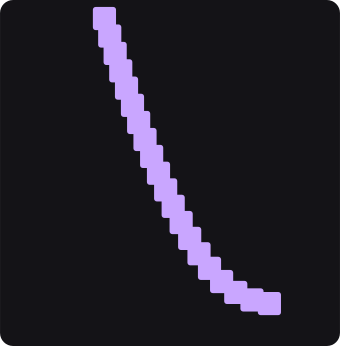
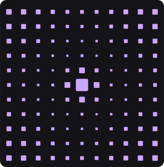
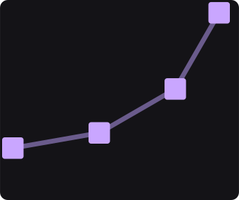
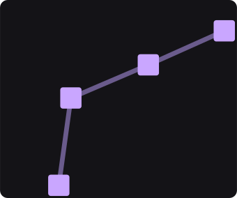
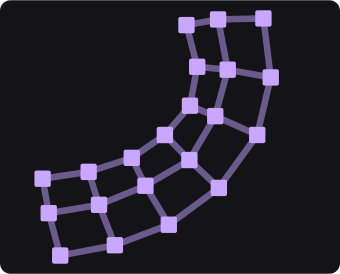
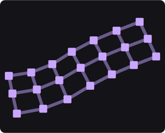

Os oito tutoriais anteriores fizeram coisas às peças — puseram-nas na tela, fizeram-nas andar, dobraram-nas, escolheram quem é afetado, entregaram-nas a uma lei, deram-lhes uma cara — e o último respondeu de onde elas vêm. Falta a pergunta que está por baixo de tudo o que se anima a sério: o que faz um monte de peças deixar de ser um monte.
Dez cartões respondem a isso, e eles vivem em duas metades que fazem coisas opostas. Cinco produzem uma coisa que já se segura sozinha; cinco agem sobre uma coisa que alguém lhes deu. A cena é essa partição:
| fileira | a pergunta | o par |
|---|---|---|
| cima | e se a coisa se segurar sozinha? | Verlet Rope contra Wave |
| meio | e se eu quiser segurá-la? | FK contra IK 2-Bone |
| baixo | e quanto é que cada osso segura? | a pele com todos iguais contra a pele com um quinhão por osso |
Cole isto inteiro num terminal. Na primeira vez ele compila (alguns minutos); depois abre em segundos.
À esquerda está uma corda. Ninguém lhe desenhou a forma: cada ponto está preso ao vizinho por uma distância, a gravidade puxa todos, e a curva que você vê é o que sobra dessa discussão, resolvida sessenta vezes por segundo.
À direita está um campo de onda, visto de cima. Cada célula empurra as quatro vizinhas, e uma fonte no meio sobe e desce. O que você vê são anéis a crescer do centro para fora — as peças engordam com a altura da onda.

Verlet Rope
WaveVerlet Rope: a corda e suba a linha
Gravity.
Wave: o campo e mude a linha
Height Drives de Size para Y.
Size depois de ver.Wave, escreva nesta ordem: 512 na linha
Rows, 512 em Cols, e 0.004 em
Spacing.
Os dois panos têm a mesma corrente de cinco juntas. O que muda é quem escreve o quê, e as duas maneiras estão certas:
| eu digo… | o programa acha… | |
|---|---|---|
| FK (esquerda) | o ângulo de cada junta | onde a corrente vai parar |
| IK (direita) | onde a mão tem de estar | os ângulos que a põem lá |

FK
IK 2-BoneStrength: quanto a restricao puxa (o da direita) e
baixe a linha Radius de 20 até perto de 1.
Radius de volta
em 20 e a mão volta a agarrar.Drive: o angulo de cada junta (o que está antes do
FK: os pais decidem) e mude a linha Scale.
Strength é um campo — o mesmo tipo de cartão que o tutorial 4 usou para
escolher quem é afetado — e o que ele escreve serve os três solvers deste grupo
(IK 2-Bone, FABRIK e Rubber Hose) sem que nenhum deles tenha
um controlo próprio para isso.Os dois panos têm a mesma manga de 21 peças vestida na mesma corrente dobrada. A pele não sabe nada de ossos: ela vê a corrente em repouso, vê a corrente dobrada, e segue a diferença.
À esquerda todos os ossos puxam por igual e a manga dobra inteira. À direita os dois últimos ossos não puxam nada — a metade de cima da manga fica direita, como uma manga larga que não acompanha o cotovelo.

todos iguais
um quinhão por ossoRange: que ossos puxam (pano da direita) e suba a linha
End até 1.
End até 0.
Attribute lê esse número; o Drive escreve-o na
coluna que você nomear. No passo 6 a coluna era a força de uma restrição; aqui é o peso de um
osso. Não há um cartão por coluna — há um cartão que escreve qualquer coluna.Range — um
Falloff redondo, por exemplo.
Trail (tutorial 7).
IK com um Oscillator nos dois eixos
(tutorial 2).
São dez cartões. A cena mostra seis; os outros quatro fazem o que estes seis já ensinaram, com outra forma.
| quando você quer… | procure por |
|---|---|
| uma corda, uma corrente, um chicote | Verlet Rope |
| água, uma bandeira, um pano que ondula | Wave |
| uma coisa mole que se amassa e volta à forma | Soft Body —
tem cena própria |
| um bando que se junta e desvia | Boids — tem cena própria |
| uma corrente de ossos para segurar o resto | Skeleton |
| resolver a corrente dos pais para os filhos | FK |
| pôr a mão num sítio, com dois ossos | IK 2-Bone |
| o mesmo com muitas juntas (uma cauda, uma tromba) | FABRIK |
| um braço de borracha, sem cotovelo à vista | Rubber Hose |
| uma pele que segue os ossos | Skin |
IK 2-Bone resolve exatamente e serve um braço ou uma perna; o
FABRIK resolve por aproximação e serve correntes longas; o Rubber Hose é
o braço de desenho animado, que dobra sem cotovelo. Os três leem a mesma coluna de força —
o que você aprendeu no passo 6 vale para os três.Este grupo é o primeiro em que quase nada corre na placa gráfica: nove dos dez cartões só têm caminho no processador. Isso não é um defeito escondido — é uma conta, e ela está feita.
| o cartão | o tamanho | por quadro | de um quadro |
|---|---|---|---|
Verlet Rope | uma corda de 200 pontos | 0,055 ms | 0,3 % |
Wave | 60×60 (o limite antigo) | 0,010 ms | 0,06 % |
Wave | 512×512 (o limite de hoje) | 1,32 ms | 7,9 % |
Soft Body | 512×512 | 2,26 ms | 13,6 % |
Boids | 3 600 no processador | 13,77 ms | 82,6 % |
Boids é o único deste grupo que tem caminho na placa gráfica — e
aquele número é o que ele custa quando cai para o processador. Cada agente olha para todos os
outros, por isso dobrar o bando custa quatro vezes mais. É por isso que um bando grande
precisa da placa, e os outros nove não: uma corda de 200 pontos gasta três décimos de um
por cento.IK está a
devolver a pose de repouso.